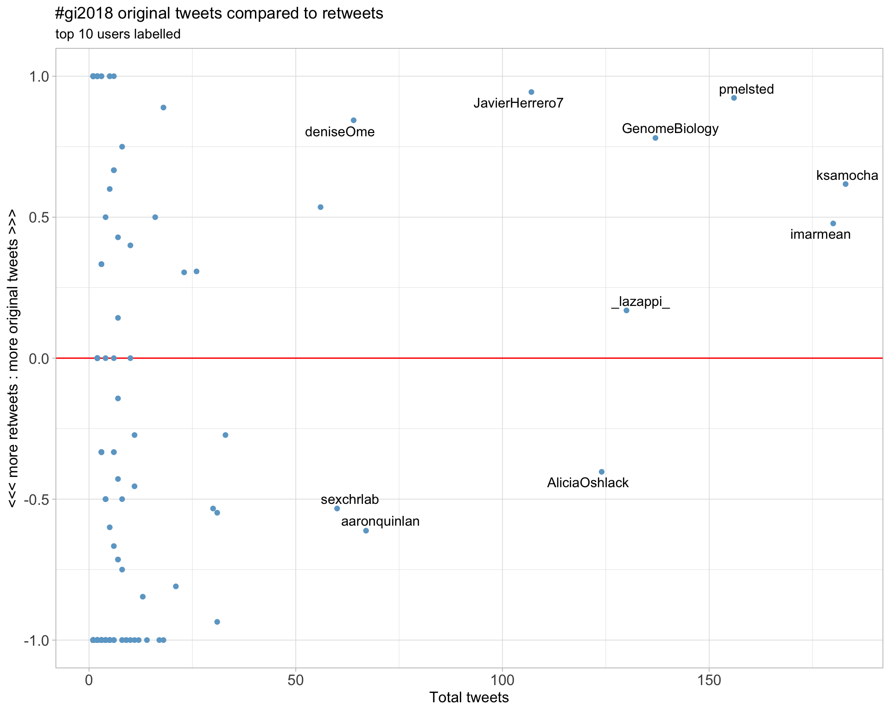
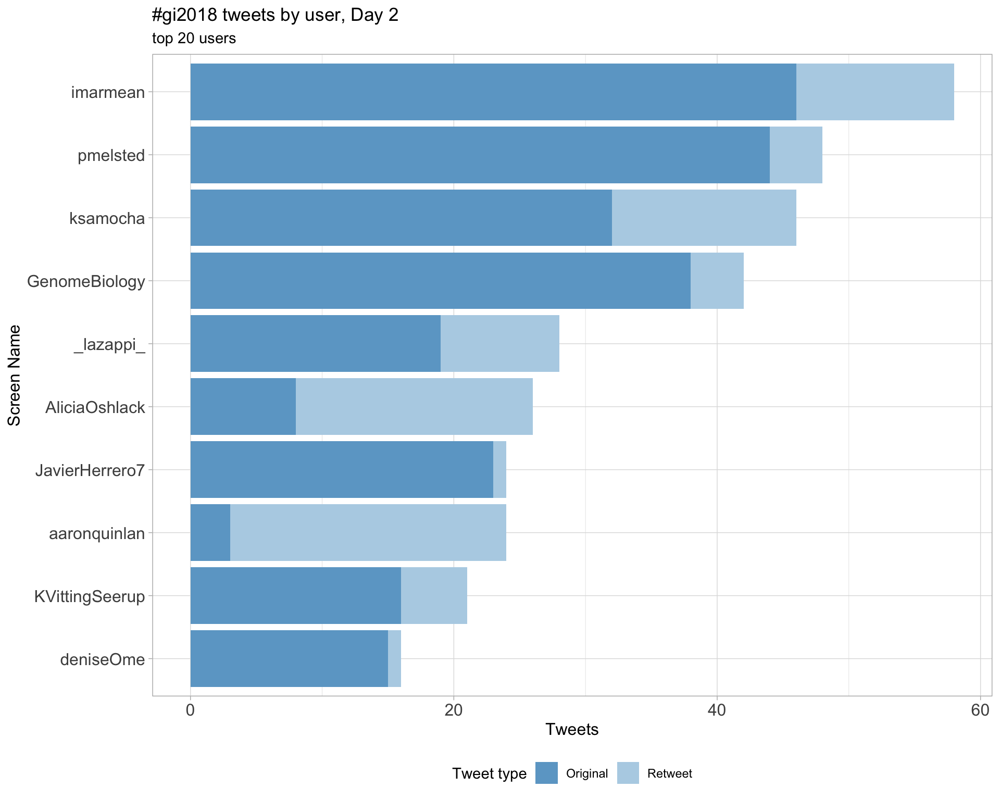
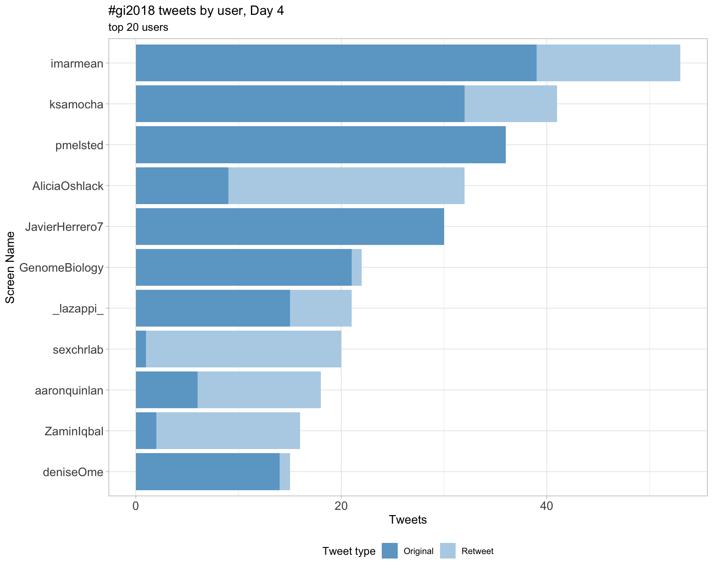
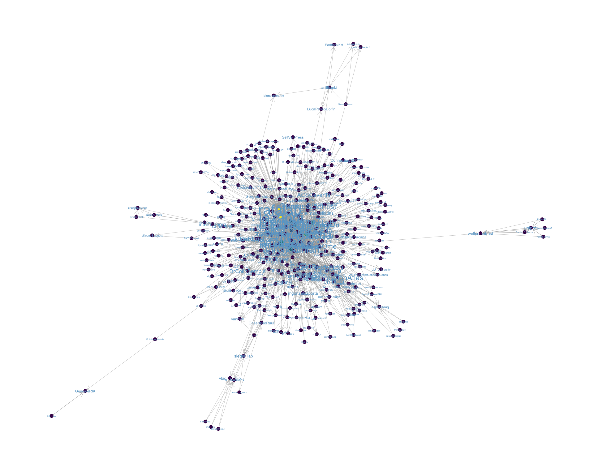
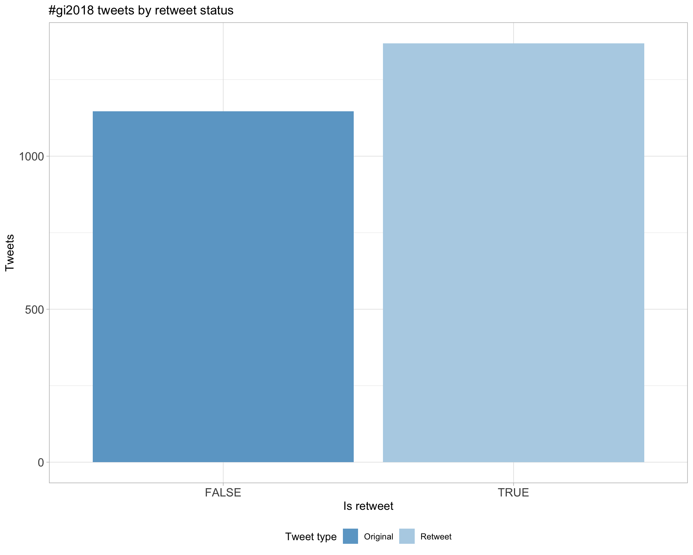
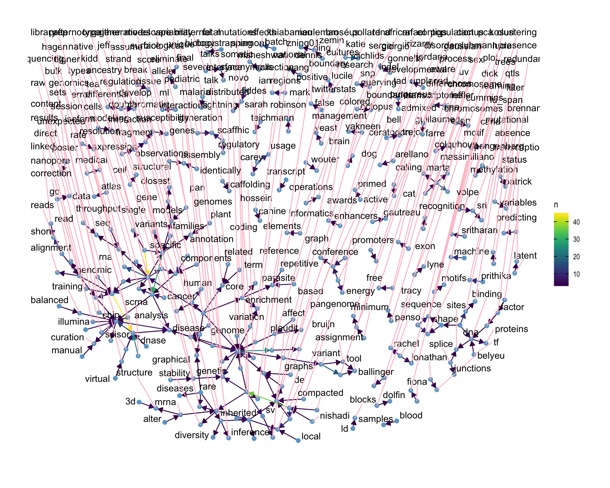
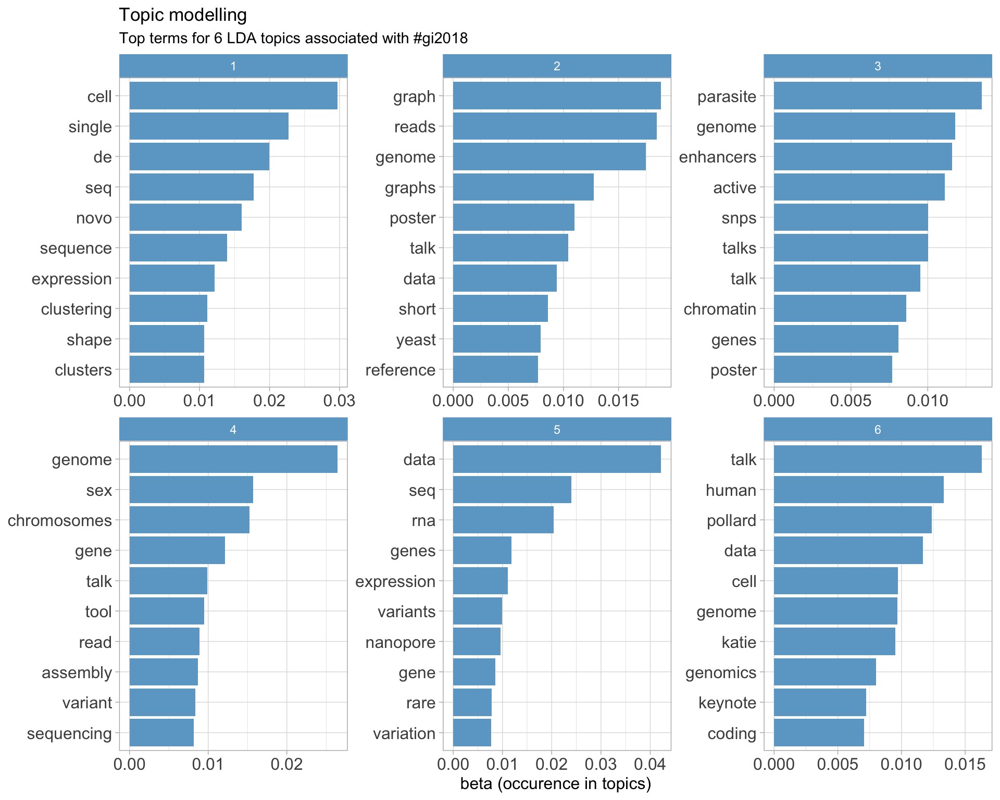

Twitter coverage of the Genome Informatics 2018 conference
Luke Zappia
2018-10-08 14:55:46
1 Introduction
An analysis of tweets from the Genome Informatics 2018 conference. 2516 tweets were collected using the rtweet R package:
2 Timeline
2.1 Tweets by day

2.2 Tweets by day and time
Filtered for dates 2018-09-17 - 2018-09-20 in the Europe/London timezone.

3 Users
3.1 Top tweeters

3.2 Top original tweeters
3.3 Retweet proportion

3.4 Top tweeters by time

3.5 Top tweeters by day
3.5.1 All tweets
Day 1

Day 2

Day 3
Day 4

3.5.2 Original tweets
Day 1

Day 2

Day 3

Day 4
3.6 Sources
4 Networks
4.1 Replies
The “replies network”, composed from users who reply directly to one another, coloured by page rank.

4.2 Mentions
The “mentions network”, where users mention other users in their tweets. Node colour, label size and alpha adjusted according to PageRank score.

5 Retweets
5.1 Retweet proportion

5.2 Retweet count

5.3 Top retweets
| screen_name | text | retweet_count |
|---|---|---|
| aaronquinlan | RI’s Key points: 1. Be skeptical of thy data 2. Plot thy data 3. Plot it different ways: by data processed, by source, by batch, etc. #gi2018 | 57 |
| lazappi | Second #GI2018 keynote @rafalab “Variability in high throughput data” https://t.co/yukgjoHvSZ | 33 |
| lazappi | If you prefer your science in meme form here is one of the key points from @rafalab #GI2018 keynote this morning https://t.co/Xy9ra15Cd3 | 22 |
| sexchrlab | Genome Informatics #GI2019 November 6 - 9, 2019 Abstract Deadline: August 16, 2019 https://t.co/w7wLlPt6Uh #GI2018 | 21 |
| ksamocha | Laura Huerta #GI2018: Expression Atlas (https://t.co/vBdOlZP3Bn) is an open-access resource for gene expression data that has >3300 datasets currently. | 18 |
| lauhuema | Slides from my presentation about @emblebi @ExpressionAtlas at #GI2018 are available at @F1000Research in case anyone wants to have a look! https://t.co/hbCI1dPvyn https://t.co/cXUAPHq39w | 17 |
| AliciaOshlack |
I’ll be tweeting from #GI2018 which is getting underway in a few hours and I’m super excited! Program: https://t.co/gUIz4y6CgY Poster channel: https://t.co/xrktvzLo6G |
16 |
| JavierHerrero7 | .@GreeneScientist — After the controversy on ‘research parasites’ (see https://t.co/aBGwIlZAS5 and https://t.co/57AsQAWCvj), new awards for researchers re-using data at https://t.co/0UTHhiIG77. Deadline approaching fast (30 Sep) #gi2018 | 16 |
| imarmean | Sarah Teichmann on the exponential growth of single cell methods #GI2018 https://t.co/ByqAS2XT3P https://t.co/803Rj2Bv8k | 16 |
| sexchrlab |
Next at #GI2018 @srikosuri Reminding us that every person has 4-5 million deviations from the reference, pointing us to a preprint from the lab: Many rare genetic variants have unrecognized large-effect disruptions to exon recognition https://t.co/DACPefBheE |
15 |
6 Favourites
6.1 Favourite proportion

6.2 Favourite count
6.3 Top favourites
| screen_name | text | favorite_count |
|---|---|---|
| aaronquinlan | RI’s Key points: 1. Be skeptical of thy data 2. Plot thy data 3. Plot it different ways: by data processed, by source, by batch, etc. #gi2018 | 169 |
| lazappi | Second #GI2018 keynote @rafalab “Variability in high throughput data” https://t.co/yukgjoHvSZ | 110 |
| lazappi | If you prefer your science in meme form here is one of the key points from @rafalab #GI2018 keynote this morning https://t.co/Xy9ra15Cd3 | 57 |
| AliciaOshlack |
I’ll be tweeting from #GI2018 which is getting underway in a few hours and I’m super excited! Program: https://t.co/gUIz4y6CgY Poster channel: https://t.co/xrktvzLo6G |
46 |
| aaronquinlan | Thank you to everyone that attended and presented at this year’s #gi2018 meeting. The quality of the work was exceptionally high, and a sign of great things to come. Genome Informatics is in great hands with @sexchrlab and @AliciaOshlack. See you at #gi2019! | 46 |
| sexchrlab |
On my way to Genome Informatics 2018 #GI2018 The difference is gonna be like night and day. :) https://t.co/15B4de1wFB |
41 |
| ZaminIqbal | My awesome student Rachel Colquhoun @rmcolq talking about pan genome SNP/indel and variation calling in bacteria! (Primarily for @nanopore ) #GI2018 https://t.co/MAYfDbgwpX | 37 |
| AliciaOshlack | You might have noticed that the #GI2018 conference logo is actually a clustering tree by @_lazappi_ https://t.co/QhIFyFHnzU | 36 |
| imarmean | Barbara Englehardt (@BeEngelhardt) : Machine learning: biggest open question: could we have used logistic regression instead? Always ask yourself that! #gi2018 | 36 |
| AliciaOshlack | Hanging out in Cambridge with ⁦@sexchrlab⁩ after #GI2018 https://t.co/KlyidQQOAC | 32 |
7 Quotes
7.1 Quote proportion

7.2 Quote count

7.3 Top quotes
| screen_name | text | quote_count |
|---|---|---|
| deniseOme | .@ACSCevents. Looking forward to the 18th edition of #genomeinformatics on this beautiful @wellcomegenome campus. Will be live tweeting my #GI2018 impressions, peppered with some #OpenTargets @targetvalidate flavour. https://t.co/OjIxIbgmwo | 3 |
| HKhiabanian | Thrilled for the opportunity to present at #GI2018 on the results of our collaboration with Precision Medicine Program @RutgersCancer. Here are the slides for my upcoming talk: https://t.co/JbqHgwO04L https://t.co/ugUgKi9Vcv | 3 |
| ConnectingSci | Welcome to everyone arriving for #GI2018 today! https://t.co/bHloGWSdk9 | 3 |
| AliciaOshlack | The three commandments #gi2018 https://t.co/1MZv9JBxLD | 2 |
| Nicola_Lady | The ‚ÄúOur Father‚Äù of doing biological data analysis üôè. Enjoying following the #GI2018 tweets - keep em coming! https://t.co/Gj8HoMoejP | 2 |
8 Media
8.1 Media count

8.2 Top media
| screen_name | text | favorite_count |
|---|---|---|
| lazappi | Second #GI2018 keynote @rafalab “Variability in high throughput data” https://t.co/yukgjoHvSZ | 110 |
| sexchrlab |
On my way to Genome Informatics 2018 #GI2018 The difference is gonna be like night and day. :) https://t.co/15B4de1wFB |
41 |
| ZaminIqbal | My awesome student Rachel Colquhoun @rmcolq talking about pan genome SNP/indel and variation calling in bacteria! (Primarily for @nanopore ) #GI2018 https://t.co/MAYfDbgwpX | 37 |
| AliciaOshlack | You might have noticed that the #GI2018 conference logo is actually a clustering tree by @_lazappi_ https://t.co/QhIFyFHnzU | 36 |
| AliciaOshlack | Hanging out in Cambridge with ⁦@sexchrlab⁩ after #GI2018 https://t.co/KlyidQQOAC | 32 |
| GreeneScientist |
As a heads up, the title of my #GI2018 talk has changed. But feel free to tweet any of the content. I’ve exported PNGs of the slides in case you want to tweet about one or more of them: https://t.co/GoG64RH9zP https://t.co/FmvYSnWTlr |
27 |
| michaelhoffman | Loving the #GI2018 tweets but twitter needs a redundancy filter: https://t.co/J0izh4NktB | 27 |
| lauhuema | Slides from my presentation about @emblebi @ExpressionAtlas at #GI2018 are available at @F1000Research in case anyone wants to have a look! https://t.co/hbCI1dPvyn https://t.co/cXUAPHq39w | 27 |
| GreeneScientist | Now @rafalab is judging my #piechart at #GI2018. https://t.co/KWujRuWzuc | 25 |
| markrobinsonca | Front row at #gi2018 .. ⁦@rafalab⁩ https://t.co/rwu80kEtTA | 25 |
8.2.1 Most liked media image

9 Tweet text
9.1 Word cloud
The top 100 words used 3 or more times.

9.2 Bigram graph
Words that were tweeted next to each other at least 5 times.

9.3 Topic modelling
Top 10 words associated with 6 topics identified by LDA.

9.3.1 Representative tweets
Most representative tweets for each topic
Topic 1
| topic | screen_name | text | gamma |
|---|---|---|---|
| 1 | pmelsted | JC: De novo SV in parents can be verified lacking grandparents and transmitted in offsprint. High power to verify true de novo SV. Can visually audit de novo SV calls with SV-Plaudit. Scored using academic mechanical turk (Pizza) #GI2018 | 0.9930245 |
| 1 | pmelsted | JB: explanation of 5K deletion, non-allelic homologous recombination, most likely a variant but not de novoe. Estimate of 1SV per 10samples, (compare to 50-70 SNPs per sample de novo), based on 7 calls in 74 parents. Finds lower (possibly) de novo SV in second generation #GI2018 | 0.9925124 |
| 1 | pmelsted | IF: scRNA detection rate of variants is a function of gene expression. Highly sparse data. Mutations identify tumor cells, overlays variant assignments with clustering based on expression. Detected TP53 mutant cluster with allele specific expression. #GI2018 | 0.9925124 |
| 1 | pmelsted | ST: @humancellatlas project, 22 tissues, 185 projects. Highlighting the maternal-fetal interface. How is fetal co-existence possible wrt immune response? Single cell reveals clusters of maternal and fetal cells (clustered by expression, revealed by dna sequecing). #GI2018 | 0.9922271 |
| 1 | imarmean | .@koenvdberge_Be: several papers have noted that bulk RNA-seq DE methods are not worse than fine tuned scRNA-seq tools. BUT zero inflation in scRNA-seq data still has an effect -> lets make bulk RNA-seq DE methods account for zero inflation! #gi2018 | 0.9922271 |
| 1 | pmelsted | KP: Sequence motifs fail to explain key aspects of protein-DNA binding. Evidence for high affinity, but no nucleotide sequence motif. Different sequences can have the same DNA shape. Hypothesis: DBPs can detect other things than sequence motifs. #GI2018 | 0.9912239 |
| 1 | imarmean | KPollard: nice introduction of the hypotesis that DNA binding proteins (DBPs) recognize shape of DNA and not sequence motifs! one of the many arguments: most DNA binding proteins have high affinity for sequences that lack a nucleotide sequence motif #gi2018 | 0.9912239 |
| 1 | JavierHerrero7 | .@nishadi_desilva talking about fungus Z. tritici, a pathogen for wheat. MFS1 gene seems to be the main player in multi-drug resistance (showing an #Ensembl GeneTree, taking me down memory lane). Community annotation allows to give pathogen genomes some extra TLC. #gi2018 | 0.9912239 |
| 1 | pmelsted | NDS: Multidrug resistance in Z. tritici fungi, high mutation rates, overexpression of MFS1 confers resistance to drugs, inactivation of MFS1 increases efficiency. PHI-Base: annotations to find orthologs in related fungi #GI2018 | 0.9908294 |
| 1 | imarmean |
Teichmann: CellPhoneDB: that combines 1. selected and membrane proteins 2. curated protein complexes 3 protein-protein interactions to build cell-cell communication networks from single-cell transcriptomes , paper in press #gi2018 |
0.9908294 |
Topic 2
| topic | screen_name | text | gamma |
|---|---|---|---|
| 2 | pmelsted | RC: Index reference graph, map to collection of graphs, generate consensus and genotype. Indexed using minimizers rather than k-mers. Sketch reads (seed) compare to index, pick path between hits using maximum likelihood (extend). Genotyping using a poisson model. #GI2018 | 0.9925124 |
| 2 | pmelsted | LB: Long read alignment, find anchor k-mers (seed) that are in long and short reads. Find paths between anchors (extend). Heuristics developed for genomic data (e.g. uniform cov) don’t translate to transcriptome data. Coverage varies more, branching nodes for splicing #GI2018 | 0.9922271 |
| 2 | pmelsted | LB: IGV plot after correction shows cleaner data with fewer errors and accurate splice junctions. Two methodologies, align short reads to long reads and correct, second is to build a graph structure from short reads, align long reads to graph. #GI2018 | 0.9919192 |
| 2 | pmelsted | Prithika Sritharan: using variation graphs to encode yeast diversity #GI2018 National Collection of Yeast Cultures, contains 4K strains from 530 species. Looking at variant discovery, limitations of reference based variant calling. Worse for diverse strains. | 0.9915859 |
| 2 | AnillaManrique | My design team is looking for enterprise data science professionals with >3 years experience as research subjects. Help us create intuitive and painless user experiences for your field! #gi2018 #DataScientist #DataScience #DataGovernance #DataOps #Data | 0.9903978 |
| 2 | nmensah5 | Patrick Brennan at #GI2018 : @nationwidekids plan to build a big data warehouse (using #hadoop and #spark) for querying genomic variants, but currently no data sharing with other hospitals. Would be a v. good future direction for the national #bioinformatics solution @NHSgmc | 0.9903978 |
| 2 | pmelsted | LB: Methods designed for genomic data. Short read alignments suffer from bias towards major isoform, CPU time. Long reads graph alignment faster, but graph complexity is hard #GI2018 | 0.9903978 |
| 2 | ksamocha | Guillaume Gautreau #GI2018: The pangenome is the union of sequence entities shared by genomes of interest. Can partition the pangenome to show core elements shared across genomes vs accessory elements. As you add more elements, though, the number of core genes drops. | 0.9903978 |
| 2 | imarmean | Sritharan: comparing the read alignment quality between linear and graph-based reference, the graph based ref alignments lead to 8-41% of reads having increased read alignment quality scores! #GI2018 | 0.9899234 |
| 2 | JavierHerrero7 | .@NikkaRyanK — Supernova outputs phased diploid genome. Supernova v2.0 produces higher contig N50. From contigs, generate lines, micro-assemblies, super-scaffolding… several steps to get the final assembly #gi2018 | 0.9899234 |
Topic 3
| topic | screen_name | text | gamma |
|---|---|---|---|
| 3 | sexchrlab |
First @rafalab goes through a toy example that makes a great point: Summary statistics of height: Average: 6.1 ft Standard deviation: 7.8 ft EDA shows an outlier - b/c EU student reported in cm, not inches. Fix this: Average 5.75 ft, StDev 3 inches #GI2018 #LookAtData |
0.9922271 |
| 3 | ksamocha | .@ellenleffler #GI2018: Testing for host-parasite associations using 1690 SNPs in merozoite surface genes (parasite) and 4055 SNPs in blood group genes (host). Flat QQ plot, but one apparent association signal (parasite: MSP4 and MSP2). | 0.9912239 |
| 3 | asier_gonzalez_ | Nice work of Minerva Trejo Arellano studying the links of methylation and darkness induced senescence in Arabidopsis. Only modest methylation changes were found, but differential gene expression and pathway analyses support the finding of local changes in methylation #gi2018 | 0.9912239 |
| 3 | JavierHerrero7 | .@RmMasa — Evolutionary turnover: conserved or diverged if elements is present but not active. Active promoter evolve more slowly than active enhancers and than primed enhancers. Differences between tissue-specific vs tissue shared elements EXCEPT for primed enhancers. #gi2018 | 0.9908294 |
| 3 | MKarimzade | #GI2018 Ellen Leffler tested for 7 million pairwise association of 1690 SNPs in 148 malaria merozite surface genes with 4055 SNPs in 39 human blood group genes. Two hits: both close to each other at chromosome 2, with OR of 0.39 for GCNT2 and 2.89 for GBGT1 | 0.9908294 |
| 3 | pmelsted | EL: new view: take parasite variation into account. sequence parasite genomes, test for assoc between host and parasite, infected blood samples should yield dna from the parasite at good coverage. Sequenced 900 blood samples #GI2018 | 0.9908294 |
| 3 | ksamocha | Gaither #GI2018: Use ViennaRNA package to estimate structural tendencies of all human synonymous SNPs. Focusing on delta minimum free energy (dMFE) measure. Low dMFE = stabilizing; high dMFE = destabilizing. | 0.9903978 |
| 3 | pmelsted | EL: Look for associations between 1.6K snps in parasites vs 4K snps in blood group genes. 7million pairwise tests. Flat QQ plot corresponding to lack of structure between the two sets. Two peaks on the manhattan plot #GI2018 | 0.9903978 |
| 3 | pmelsted | First talk of 3rd session, @ellenleffler on host and parasite genomes in malaria. How does genetic variation influence susceptibility to severe malaria? Gwas approach using 5K cases and controls. new assoca with large structural variant #GI2018 | 0.9903978 |
| 3 | aaronquinlan | Fabulous, engaging story from @nishadi_desilva about wheat domestication and the consequent many mode of pathogen attack. Weaving in data resources, pathogen-host interactions, and cool biology. A truly enthralling, exceptional talk. #gi2018 | 0.9903978 |
Topic 4
| topic | screen_name | text | gamma |
|---|---|---|---|
| 4 | pmelsted | GG: highlighting Bandage (fantastic software from @rrwick ) which supports GFA. New software GfaViz, interactive and cli mode, supports GFA2, selection of layout algorithms, can save layout/options into the GFA file (I can haz software?) #GI2018 | 0.9919192 |
| 4 | pmelsted | NDS: Z. tritici 519bp insert on accessory chromosome in anti-fungal resistance strains, overexpresses MFS1. EnsemblFungi community based projects to spread knowledge, neccessary to standardize gene names (often using manual annotation) #GI2018 | 0.9915859 |
| 4 | pmelsted | MWS: mask out PAR, look for evidence of Y, if there is not evidence of Y, remove it from the reference. Depth ratio of chr19 to Y shows that reads map to Y, but lower depth ratio. Read balance of variants, typically two copies ratio of 0.5, for hets. Y is messed up #GI2018 | 0.9915859 |
| 4 | pmelsted | SY: plotting metrics from cloud VMs allows users to identify issues. Worklow engine allows “self healing”, detect anomalies and restart/relaunch workers automatically, outputs to email and slack for human consumption #GI2018 | 0.9908294 |
| 4 | pmelsted | SY: separating data analysis from workflow execution. Focusing on operations management: tracking and monitoring execution of workflow in the cloud. Using https://t.co/FabIANAAzH for cross cloud operations, https://t.co/VFb2YZeZew for config, workflows using airflow #GI2018 | 0.9908294 |
| 4 | imarmean | .@JeffreyMKidd : current genome reference is a boxer-derived genome BUT not perfect 19k gaps, 3.2k unplaced contigs, missing gene models … -> genome assembly of a new individual will capture more genetic diversity #gi2018 | 0.9908294 |
| 4 | MKarimzade | #GI2018 Ever wonder how large scale data processing is managed in #PCAWG? Sergei Yakneen discusses 4 main steps: Provisioning with Terraform, configuration with Saltstack, workflow with Airflow, and an in-house developed self-healing operation management. | 0.9903978 |
| 4 | pmelsted | GG: GfaViz can vizualize scaffolding between contigs, can visualize read to read alignments, pipeline taking minimap2 PAF output to GFA2, also for read to contigs (sam to GFA2). GfaViz coming out later this year #GI2018 | 0.9903978 |
| 4 | pmelsted | JK: Breed structure enables trait mapping. Existing genome, canfam3, 19K gaps, incomplete or missing gene models. From the old days of yore done with sanger sequencing of plasmids and fosmids #GI2018 | 0.9903978 |
| 4 | pmelsted | Sarah Carey: Genome analysis in a polymorphic moss with large ancient sex chromosomes. Haploid genome, with UV sex chromosomes. U (female) and (V) male. Third of the genome is sex chromosomes. Assembled using PacBio #GI2018 | 0.9899234 |
Topic 5
| topic | screen_name | text | gamma |
|---|---|---|---|
| 5 | pmelsted | SK: rare variants seem to play a role in underexpression. inserted synthetic library into exons to report splicing. Took 28K variants from ExAC in exons. Splice disrupting variants, occur at exon intron boundaries, but SNP density is lower at boundary #GI2018 | 0.9925124 |
| 5 | pmelsted | RI: Batch effect from sequencer removed, turns out to be similar. Showing earlier results from microarray with similar results (species signal stronger than tissues). What are the “probe effects” in RNA-Seq. Number of transcripts in genes explains variability, GC bias too #GI2018 | 0.9919192 |
| 5 | pmelsted | BE: tGPLVM, Q factors (latent vars), noiseless obs drawn from Gaussian process, composite kernel and observations with heavy tail residuals (I’m pretty sure that explains the acronym), trust me the slides were comprehensible as well as the delivery, not this tweet though #GI2018 | 0.9912239 |
| 5 | pmelsted | .@rmcolq: Pangenome variation inference from nanopore of illumina data #GI2018. Looking for variation within genes accross species/strains as well as inclusion of genes. 3K core genes, 90K total number of genes, normal E. coli has 5K genes | 0.9912239 |
| 5 | pmelsted | KP: in autism patients, we don’t see depletion of deletions at TAD boundaries, not enough time for evolution to act. Keynote message: Variant effect predictor tools should model the TAD explicitly. First results of tools look like Hi-C generated maps #GI2018 | 0.9912239 |
| 5 | imarmean | .@rafalab Comparing species (mouse/human) RNA-seq from microarrays and RNA-seq: initially no correlation BUT there are probe effects, difference in no of transcripts per species, GC content effects that interfere .. #gi2018 | 0.9899234 |
| 5 | pmelsted | SY: Pan Cancer Analysis of Whole Genomes, analysing genomes from 2834 donors. Data processing timeline, across 2 years, 16K compute cores, processing issues cause delays, hard to keep sustained throughput #GI2018 | 0.9899234 |
| 5 | JavierHerrero7 | .@HKhiabanian —LOHGIC: LOH-Germline Inference Calculator. Tested on 64 patients. Generally correct. One curious case where a BRCA2 mutation was inferred to be somatic instead of germline. In that patient, mutation was indeed germline but reverted in the tumour #gi2018 | 0.9893998 |
| 5 | MKarimzade | #GI2018 @HKhiabanian: 1/ Often in clinic you have tumour only data. Your expected allele frequency for each depends on tumour purity, estimated by a pathologist without estimate of variance. Solution? Use binomial likelihood of each possible genotype in an interval of purity. | 0.9893998 |
| 5 | pmelsted | KP: deleterious deletions will be depleted over time, looking at rare variants in patients and healthy people, fixed differences between primates. Deletions are depleted at the BE, 10-fold reduction compared to background #GI2018 | 0.9893998 |
Topic 6
| topic | screen_name | text | gamma |
|---|---|---|---|
| 6 | MKarimzade | #GI2018 1/ @nameluem used 733 DNase-seq data from 439 different human cell types, covering 21% of the genome in total and 3.5 million DNase hypersensitive sites. They used NMF with k=16 and labeled each DHS based on its assigned cell type. This provides a new vocabulary .. | 0.9908294 |
| 6 | pmelsted | KP: enters minefield territory, “challenges and limitations of ML in genomics”. Training data: pairs of enhancer promoter sites, annotated by strength of interaction (actually binary). Predictions are better than “closest gene”. #GI2018 | 0.9903978 |
| 6 | pmelsted | RI: Technical vs biological variability. Need technical replicates to distinguish variability that is natural vs variability due to technologies. NGS does not eliminate biological variability. Moves into DNA methylation examples #GI2018 | 0.9899234 |
| 6 | pmelsted | KP: cryptic errors made: most ML models assume IID, methods use this aggressively. Genomic data is not IID, dependent observations can appear in training and test set, they “bleeding over” overestimating performance #GI2018 | 0.9899234 |
| 6 | ACSCevents | 17 years after the first #Genome #Informatics conference (in 2001), today participants arrive for #GI2018. Thanks to advances in technology this continues to be one of our most popular topics, as the human #genetics community strives to progress in this fast moving field. #ACSC30 https://t.co/2LSRvQ2XcY | 0.9899234 |
| 6 | sexchrlab | Patrick Brennan: Nationwide Children’s has both clinical genetics (CLIA) and research genetics to interplay and improve diagnosis and treatment of childhood cancers (typically fresh-frozen, but sometimes fixed samples). #GI2018 | 0.9899234 |
| 6 | ksamocha | Jordana Bell (@jordanatbell) #GI2018: Studied methylation variability in 400 twins from the TwinsUK cohort. Looked at 772k CpGs after QC. Correlation in twin methylation profiles were consistent with heritability. | 0.9893998 |
| 6 | JavierHerrero7 | .@nameluem — Uses DNAse I to look at accessible chromatin. Current maps of the human regulatory regions have scope for improvements. Unclear what the landscape is for any particular gene. Still unclear how to interpret non-coding regulatory elements. #gi2018 | 0.9888188 |
| 6 | deniseOme | .@jon_belyeu Great to see a talk at #gi2018 using the CEPH Human Genome Diversity Cell Line Panel. The precursors of 1000G, 10K, 100K genome resources for human genetics/genomics. https://t.co/lUyZnoACac | 0.9888188 |
| 6 | pmelsted | KP: Results revealed distinct genomic signatures of looping DNA. Common ML errors: “always no” predictors can give good performance in unbalanced sets (most E-P sites are not interacting) #GI2018 | 0.9881705 |